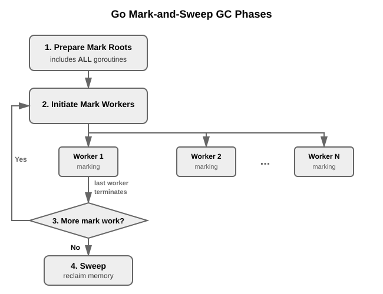
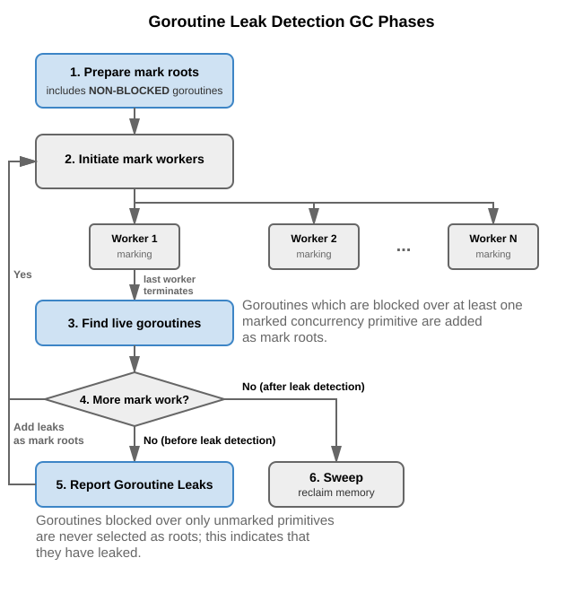
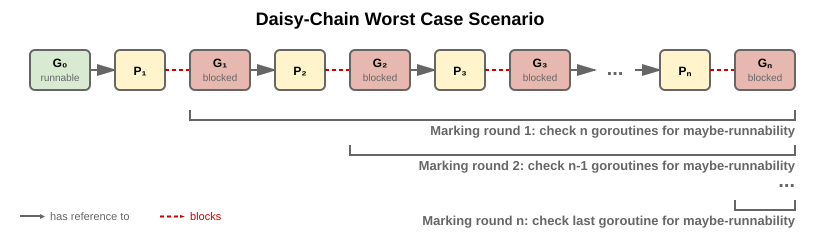

大家好，我是江湖十年。
Go 1.27 发布有一段时间了，我之前专门写过《Go 1.27 测试相关变化详解：新特性与升级避坑》，分享测试相关功能。今天再来分享一下 Go 1.27 新增的 goroutine leak profiler 能力，2026 年 9 月 Go 官方发表过《Goroutine Leak Profiles》，作者是 Vlad Saioc。文章介绍了 Go 1.27 新增的 goroutine leak profiler，它可以在运行中的 Go 程序里，包括生产环境，精准定位那些永久阻塞的 goroutine。本文是对这篇文章的中文翻译。
如下为译文：
Vlad Saioc
2026 年 9 月 2 日
Go 的并发特性强大且易用，但正是这种易用，有时也会让经验丰富的开发者犯错。幸运的是，Go 生态提供了一些有用的调试工具，比如竞态检测器（race detector），但即便是现有工具，也可能漏掉一些并发 bug，比如本文要讨论的主题——goroutine 泄漏（goroutine leak）。
Goroutines 通过共享的并发原语（concurrency primitives）同步或交换信息，比如 channels、锁和 wait groups。在通信过程中，goroutines 经常会阻塞（block）在这些原语上，也就是等待某个条件满足；常见的例子包括等待获取已被持有的互斥锁，或从 channel 接收消息。Goroutines 也可能阻塞在操作系统操作上，比如从网络 socket 或文件读取数据。
如果一个 goroutine 被阻塞，而解除阻塞所需的条件永远不可能满足，我们就可以认为它泄漏了。随着时间推移，泄漏的 goroutines 越积越多，会因内存占用过高（泄漏的 goroutines 本身，或它们引用的内存）以及垃圾回收器带来的 CPU 开销而拖慢性能，尤其是在使用 GOMEMLIMIT 时。
Goroutine 泄漏出了名地难以检测。在单元测试中，最重要的突破之一是开源库 goleak，它可以在单个测试结束后，把所有未终止的 goroutines 标记为可疑对象。类似地，Go 1.25 在标准库中引入了 synctest 包，它让 Go 开发者能更好地控制并发事件的顺序，从而可靠地测试那些难以复现的场景，显著提升并发代码单元测试的质量。
遗憾的是，这两种方法都无法检查生产系统中的 goroutine 泄漏，尤其是在规模较大时，生产系统的行为可能超出测试覆盖的范围。Goroutine profiles 是基础手段，可以用来检查哪些操作阻塞了过多 goroutines，或分析增长趋势。但 goroutine profiles 无法区分哪些 goroutines 是泄漏的，哪些只是按设计暂时大量阻塞，比如微服务流量上涨导致的阻塞。同样，数量较少的泄漏可能潜伏多年而不被发现。
Go 1.27 引入了 goroutine leak profiler，这是一种灵活且轻量的机制，用于在运行中的 Go 程序里查找 goroutine 泄漏，包括生产系统。与以往需要人工分析的方法不同，这种机制很精确，几乎不会产生误报。代价是它只覆盖一部分 goroutine 泄漏：goroutines 永久阻塞在 channels 或 sync 包原语上。幸运的是，正如后面的例子所示，这已经覆盖了 goroutine 泄漏中相当大的一部分。
接下来几节会展示如何使用这个特性，然后给出一些可检测泄漏的补充示例，并介绍底层实现和取舍。
示例：并发 workers
考虑一个并发处理工作项的函数：
1 | type result struct { |
因为 ch 是无缓冲 channel，每个 worker goroutine 在发送结果时都会阻塞，直到主 goroutine 从 channel 接收。如果 processWorkItems 因为错误而提前返回，接收循环就结束了，剩下的发送方 goroutines 会永远阻塞。
这个例子代表了一类在真实 Go 程序中常见的错误，包括 Uber 的生产服务也不例外。下面看看如何用新的 goroutine leak profiler 找到这些泄漏。
用 goroutine leak profiler 调试
这个 profile 可以通过 runtime/pprof 包使用，profile 类型名为 goroutineleak；也可以安装 net/http/pprof 包定义的 profile handlers 来使用。如果你的服务里已经配置了 net/http/pprof，那就什么都不用做！这个 profile 会自动出现在 /debug/pprof/goroutineleak 端点，无论 handlers 安装在哪个 host 和 port。
下面把前面的并发 bug 放到一个完整程序里，并配置好 net/http/pprof 包。这样你就可以自己动手试试了！
1 | package main |
构建上面的程序，然后运行：
1 | $ go build -o leaky |
收集 profile
程序很快就会开始积累泄漏，然后你可以在 http://localhost:6060/debug/pprof 的 web UI 中查看。
或者用 curl 收集 goroutine leak profile，再用 go tool pprof 分析：
1 | $ curl http://localhost:6060/debug/pprof/goroutineleak > leak.prof |
profile 显示泄漏发生在 ch <- result{res, err}（第 33 行），直接指出了罪魁祸首。值得注意的是，程序运行得越久，泄漏的 goroutines 数量就越多。
修复泄漏
只要给 ch 加上缓冲区就能修复：
1 | ch := make(chan result, len(ws)) |
这样，即使 processWorkItems 提前返回，所有工作项 goroutines 也都能把消息发出去，而不会阻塞。
更多真实案例见这一节。
实现原理
这一节面向对 goroutine leak profiler 内部泄漏检测原理感兴趣的读者。如果只关心性能开销和限制，可以直接跳到这一节。
核心概念
先从一个初步观察开始：如果一个 goroutine 阻塞在某个并发原语上，而其他任何 goroutine 都无法访问这个原语（这里说的是无法通过内存中的引用访问），那它显然泄漏了。这已经是一条很强的线索，我们可以进一步推广，给出一个 goroutine 没有泄漏的定义，我们称之为存活性（liveness）。我们用归纳法形式化定义存活性：
一个 goroutine 是存活的（live），当且仅当：
它没有被并发原语阻塞，或者
至少有一个阻塞它的并发原语被另一个存活的 goroutine 引用。
基本情况很简单，没有被阻塞的 goroutines 显然没有泄漏。归纳步骤背后的假设是，任何没有泄漏的 goroutine，最终都可能用自己引用的并发原语，让其他被这些原语阻塞的 goroutines 恢复运行。
为了找出所有存活的 goroutines，我们从明显存活的、未被阻塞的 goroutines 出发，沿着它们持有的引用（也就是通过它们的局部变量）追踪，找出它们能访问的并发原语。然后逐步把阻塞在这些原语上的 goroutines 也标记为存活，重复这个过程，直到不再发现新的存活 goroutines。
幸运的是，Go runtime 已经通过垃圾回收器（GC）计算内存可达性，所以下一步就是改造 GC 来满足我们的需求。下面两张图可以快速对比两种 GC：

图片来自 Go 官方博客。

图片来自 Go 官方博客。
不需要彻底重写 GC。Go runtime 使用的是并发三色标记清除垃圾回收器（现在是 Green Tea 变体！），它的工作方式已经和我们的目标很契合。只需要做几处关键改动：
在初始阶段，常规 GC 会把所有 goroutines（以及全局变量）都标记为可达，这样它们永远不会被当作垃圾，也就是把它们当作根对象（mark root）。我们改成只把未被阻塞的 goroutines 作为根对象，因为它们一定是存活的。
接下来是标记阶段，GC 会从根对象出发，顺着引用关系一路追踪下去，把能访问到的对象都标记为可用内存。虽然我们不直接修改这个阶段，但第 1 步的改动会隐式保证 GC 只标记存活 goroutines 引用的内存。
标记阶段结束时，检查所有在第 1 步中没有被当作根对象的阻塞 goroutines。如果一个 goroutine 被至少一个在第 2 步中标记过的并发原语阻塞，就把它加入根集合，然后 GC 从第 2 步继续标记。这正好对应存活性定义中的归纳步骤。
所有存活的 goroutines 都找出来之后，任何没有被加入根集合的 goroutine，其状态都被设为泄漏。
最后，标记阶段会再跑一遍。这一次，所有被判定为泄漏的 goroutines 也会作为根对象加入根集合，让 GC 像常规运行那样完成标记，把它本来会标记的内存都标记出来。
GC 周期结束后，goroutine leak profiler 会像常规 goroutine profile 那样收集数据，并只筛选出严格意义上的泄漏 goroutines。
限制
上面的例子展示了 goroutine leak profiles 的用途。不过，垃圾回收器有一些限制，可能导致它漏掉一些泄漏：
内存可达范围过大（Memory overreach）：如果一个并发原语一直可以通过全局变量或可运行的 goroutines 访问到，那么阻塞在它上面的 goroutines 永远不会被报告为泄漏，即使这个并发原语以后根本不会再被使用。
可以通过更严格地管理对并发原语引用的访问，并更清晰地划定它们的生命周期来缓解。
非标准阻塞（Non-standard blocking）：为了保证正确性，goroutine 泄漏检测严格限定在 Go 语言内置的并发原语上，包括：channel 的发送和接收操作（包括对
nilchannels 的操作）、阻塞的select语句（也就是没有default分支，甚至包括没有任何 case 的select语句），以及sync包中的成员，具体是Mutex、RWMutex、WaitGroup和Cond。因为其他原因阻塞的 goroutines，比如文件 IO、网络 IO 或直接系统调用，永远不会被当作泄漏。这条规则同样适用于自定义的、用户实现的并发机制，比如自旋锁，除非它们的底层实现依赖上面列出的原语。
不确定性（Non-determinism）：泄漏只有在发生之后才能被检测到，无法提前预测，所以在不稳定的程序里复现和诊断泄漏仍然是个挑战。为了获得最好的效果，建议混合使用多种方法：在包括生产在内的各个层面使用 goroutine leak profiles，同时配合用
goleak和synctest插桩的完整测试套件。
性能影响
Goroutine 泄漏检测在设计上尽量降低性能影响，但仍然有一些成本。
内存开销可以忽略不计，只是一些用于记录状态的少量额外内存；不过 goroutine 泄漏检测可能比常规 GC 慢。最能说明问题的是一个我们称为“菊花链”（daisy-chain）的极端情况：

图片来自 Go 官方博客。
在这个没有泄漏的例子中，可运行的 goroutine G₀ 持有原语 P₁ 的引用，P₁ 阻塞了 G₁，依此类推。
这意味着，要证明某个 Pᵢ₊₁ 是存活的，必须先证明 Pᵢ 是存活的，这带来两项成本：
GC 标记阶段实际上会被 goroutines 的扫描顺序串行化，因为从某个 Pᵢ 可达的所有内存都必须先标记完，Pᵢ₊₁ 才能被加入根集合。
目前每一轮标记结束时都会检查所有阻塞的 goroutines，一个 GC 周期最坏情况下是 O(n²) 步，其中 n 是所有 goroutines 的总数。
第二点最终可以优化，但第一点是泄漏检测的固有局限，无法绕过。
尽管如此，还是要提醒读者：除非通过 runtime flags 另行配置，GC 仍然会和用户代码并发运行。而且，如果一个 goroutine 泄漏在某个时间点能被观察到，那么在同一次执行的未来任何时间点也能被观察到。所以周期性采集 profile 的基础设施可以调整采集频率，比如每 4 小时一次，把开销降到最低，而几乎不损失泄漏检测能力。
致谢
Goroutine 泄漏检测是奥胡斯大学、圣路易斯华盛顿大学和 Uber 合作研究的成果，相关论文是 “Dynamic Partial Deadlock Detection and Recovery via Garbage Collection”（Saioc 等，ASPLOS 2025）。
从学术原型到真正的 Go 特性，离不开 Google Go 团队的 Michael Knyszek 和 Michael Pratt，以及 PJ Malloy（@thepudds）的指导。
补充示例
下面是一些会导致泄漏的编码模式，来自工业级代码库和开源项目，按复杂度从低到高排列。
你可以在 Go playground 上快速试用 goroutine 泄漏检测器，也可以拿自己的泄漏来实验。
示例：重复发送
最简单的泄漏之一，是向 channel 发送了比预期更多的消息。下面这个例子里，一个 goroutine 预期通过无缓冲 channel 向主 goroutine 发送一条消息。但在错误分支里，发送操作之后漏掉了 return 语句。因此，每次遇到错误时，发送方都会尝试发送两条消息，从而造成泄漏。
1 | func DoubleSend() { |
虽然 profile 不会明确指出是漏了 return 导致的，但至少会把泄漏的发送操作标出来，把你引到出问题的函数。
1 | (pprof) list DoubleSend |
这个泄漏很好修，只要在错误分支的发送操作后加上 return 就行。
示例：提前返回
相反的情况同样常见：接收方在某些控制流路径上跳过了通信操作，这实际上就是开头示例的简化版。
1 | // Incoming error simulates an error produced internally. |
profile 会把泄漏暴露出来：
1 | ROUTINE ======================== main.EarlyReturn.func1 in .../main.go |
这个泄漏可以通过给 ch 一个大小为 1 的缓冲区来解决。
示例：超时
上面提前返回模式的一种变体涉及 contexts 和非确定性选择（select 语句）：
1 | func Timeout(ctx context.Context) { |
如果 context 在发送方与父 goroutine 同步之前就被取消，发送方就会泄漏：
1 | (pprof) list Timeout |
和前一个例子一样，修复方法是给 channel 一个大小为 1 的缓冲区。
示例：range channel 却没有关闭
用 range 遍历 channels 可以让你在循环中反复从 channel 接收值。一旦 channel 关闭，并且 channel 缓冲区里已入队的值都被接收完，循环就会退出。
重要的是，如果 channel 永远不关闭，range 循环会永远阻塞执行它的 goroutine。省略 close 操作是一个常见错误，比如下面这样：
1 | // Incoming list of items and the number of workers. |
这样的程序，goroutine leak profile 会包含下面这些内容：
1 | Type: goroutineleak |
我们看到 3 个 workers 都阻塞在 range ch 上，这已经足够提示泄漏的原因了。修复方法很简单，所有消息发送完之后关闭 channel：
1 | for _, item := range list { |
额外发现！ 眼尖的读者可能发现这个例子还有另一个潜在泄漏：如果 workers 的数量被误设为 0，父 goroutine（发送方）就会泄漏：
1 | go noCloseRange([]any{1, 2, 3}, 0) // Sender leaks with 0 workers |
profile 同样能捕获：
1 | (pprof) list noCloseRange$ |
虽然在真实的生产系统中可以假设 workers > 0 一定成立，但 goroutine leak profiles 仍然可以用来隐式监控那些万一发生的违规情况，而不需要保守地加上 workers <= 0 检查。
示例：违反方法契约
到目前为止，这些模式涉及的代码范围都相对有限。但当功能分散到多个函数、方法和包中，实现又被接口遮挡时，手动检测泄漏的难度会急剧上升。
本节就是一个例子：自定义的 worker 类型内嵌了两个 channel 字段，ch 和 done，它的 Start 方法会创建一个循环 goroutine，用 select 语句同时读这两个 channels。这个 goroutine 只有通过 done channel 收到消息才能终止，而 done 由 Stop 方法关闭。
Start 方法可以被调用任意多次，但只要调用过至少一次，最终就应该调用 Stop。
因此，Start 和 Stop 构成了一种隐式契约，规定了方法的调用顺序。破坏这个契约会导致不良行为，在这个例子里就是 goroutine 泄漏：
1 | func MethodContractViolation() { |
在实践中，这个问题会更麻烦，因为这类自定义类型通常只以接口形式导出，这个例子里就是没有透露实现细节的 Worker 类型。客户端甚至可能根本不知道底层实现，于是在不知不觉中违反了隐式契约。
幸运的是，抓取 goroutine leak profile 可以揭示这个缺陷：
1 | (pprof) list Start |
修复方法自然是顺着线索找到 Start 的调用处，补上一次 Stop 调用。
示例（Cockroach）：漏掉 Unlock
下面这个例子来自 CockroachDB。它在循环中获取并释放锁，但在执行 break 语句之前忘了解锁：
1 | type Gossip struct { |
这种情况下，goroutine 在获取锁失败时会泄漏。
1 | (pprof) list Gossip |
在 break 之前加一次 Unlock 调用即可修复。
示例（etcd）：意料之外的 channel 操作顺序
这个例子来自 etcd，展示了 channel 操作之间意料之外的顺序如何导致 goroutine 泄漏：
1 | type node struct { |
run 方法启动一个循环，预期反复从 status channel 接收消息（由调用 Status 方法发送）。同时，它也可以从 stop channel 接收一条消息（由 Stop 方法发送），收到后关闭 done channel 并退出。Stop 方法本身随后会等待从 done 接收消息，一旦 done 关闭，它就会解除阻塞。
如果 run、Status 和 Stop 方法并发执行，就可能发生泄漏。Stop 和 run 这两个 goroutines 可能完成同步并退出，却没有接收 Status 发出的消息，导致 Status 永远阻塞。
1 | (pprof) list Status |
把发往 status 的发送操作包进 select 语句，让另一个 case 分支尝试从 done 接收消息，这样，当 Status 在竞争中输给 Stop 调用时，运行 Status 的 goroutine 就能优雅退出。
示例（Kubernetes）：channels 和 mutexes 相互阻塞
这个例子出现在 Kubernetes 中，是 channels 和锁混用导致的结果：
1 | type Connection struct { |
运行 WriteFrame 的 goroutine 可能先获取 idle-aware framer 的锁，然后向 resetChan channel 发送消息，而 monitor goroutine 此时正等待从 closeChan channel 接收消息。消息发出后，monitor goroutine 会尝试获取同一把锁。但由于 resetChan 上没有任何流量，发送操作会永远阻塞，导致 WriteFrame goroutine 无法释放锁。于是两个 goroutines 都泄漏了。
1 | (pprof) list AwareFramer |
修复方法是在 monitor goroutine 从 closeChan 收到消息后，另外启动一个 goroutine，在尝试获取锁之前先把 resetChan 排空。
示例（Moby）：误用 sync.WaitGroup
下面这个 Moby 中的例子展示了 wait groups 如何导致泄漏：
1 | type Manager struct { |
group 这个 wait group 会根据插件管理器 pm 持有的插件数量增加计数器，然后遍历每个插件并启动一个 goroutine。每个 goroutine 完成任务后调用 Done 减少计数器。然而，group 错误地在循环体内部调用了 Wait，而不是在循环之后！当管理器持有多个插件时，运行 init 方法的 goroutine 就会泄漏。
1 | (pprof) list init |
把 Wait 移到循环外面即可轻松修复。
示例（Moby）：channels 和 mutexes 相互阻塞
Moby 中的另一个例子展示了 channels 和锁混用导致的泄漏：
1 | type ( |
调用 StateChanged 的 goroutine 可能先获取 daemon 中保存的 container 的锁，然后在 daemon 上调用 updateHealthMonitorElseBranch 方法，尝试向 container 的 stop channel 发送消息。然而，如果消息还没有被接收，运行 monitor 的 goroutine 可能收不到 stop 上的消息，而是选择 select 语句的 default 分支继续执行。这样它就会尝试获取同一把 container 锁，而这把锁已经被 StateChanged goroutine 持有，最终两个 goroutines 都泄漏。
1 | (pprof) list .CloseMonitorChannel |
修复方法是关闭 stop channel，而不是向它发送消息。因为关闭 channel 不是阻塞操作，StateChanged goroutine 就能释放锁。反过来，这又会解除 monitor goroutine 的阻塞，让它在下一轮循环中选择已经不再阻塞的 <-stop 分支并退出。
原文完。
希望此文能对你有所启发。
延伸阅读
- Goroutine Leak Profiles 原文：https://go.dev/blog/goroutine-leak-profiles
- Go 1.27 测试相关变化详解：新特性与升级避坑：https://jianghushinian.cn/2026/10/11/go1.27-testing-changes/
- Go 并发模式：超时，不再等待：https://jianghushinian.cn/2026/11/05/go-concurrency-patterns-timeouts/
- Go 高级并发模式：Sameer Ajmani 2013 演讲详解：https://jianghushinian.cn/2026/11/07/go-concurrency-patterns-talk-advanced/
- 本文永久地址：https://jianghushinian.cn/2026/11/11/goroutine-leak-profiles/
联系我
- 公众号：Go编程世界
- 微信：jianghushinian
- 邮箱：jianghushinian007@outlook.com
- 博客：https://jianghushinian.cn
- GitHub：https://github.com/jianghushinian